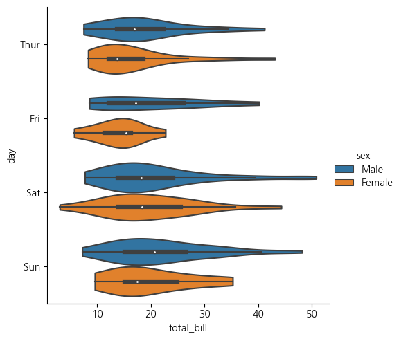

import numpy as np
import matplotlib.pyplot as plt
import seaborn as sns
import pandas as pd1. imports
2. 시각화
A. Histogrm
- Histogrm (bin) : 구간의 넓이를 조정
weight = [68, 81, 64, 56, 78, 74, 61, 77, 66, 68, 59, 71,
80, 59, 67, 81, 69, 73, 69, 74, 70, 65]
plt.hist(weight)
plt.show()
plt.hist(weight, label='bins=10')
plt.hist(weight, bins=30, label='bins=30')
plt.legend()
plt.show()plt.hist(weight, cumulative=True, label='cumulative=True')
plt.hist(weight, cumulative=False, label='cumulative=False')
plt.legend(loc='upper left')
plt.show()- Histogrm (type) : 히스토그램의 유형
weight2 = [52, 67, 84, 66, 58, 78, 71, 57, 76, 62, 51, 79,
69, 64, 76, 57, 63, 53, 79, 64, 50, 61]
plt.hist((weight), histtype='bar')
plt.title('histtype - bar')
plt.figure()
plt.hist((weight), histtype='barstacked')
plt.title('histtype - barstacked')
plt.figure()
plt.hist((weight), histtype='step')
plt.title('histtype - step')
plt.figure()
plt.hist((weight, weight2), histtype='stepfilled')
plt.title('histtype - stepfilled')
plt.show()- Histogrm (density) : 밀도함수
import seaborn as sns
import numpy as np
aa = np.random.normal(20, 1, 1000)
bb = np.random.normal(25, 3, 500)
cc = np.random.normal(10, 3, 500)
weight = np.concatenate([aa,bb,cc])
sns.displot(weight, kde=True,
bins=10, color = 'darkblue')/root/anaconda3/envs/pypy/lib/python3.10/site-packages/seaborn/_oldcore.py:1119: FutureWarning: use_inf_as_na option is deprecated and will be removed in a future version. Convert inf values to NaN before operating instead.
with pd.option_context('mode.use_inf_as_na', True):B. Boxplot
- Boxplot (Categorical) : 기본유형
tips = sns.load_dataset("tips")
sns.catplot(data=tips, x="day", y="total_bill")/root/anaconda3/envs/pypy/lib/python3.10/site-packages/seaborn/_oldcore.py:1119: FutureWarning: use_inf_as_na option is deprecated and will be removed in a future version. Convert inf values to NaN before operating instead.
with pd.option_context('mode.use_inf_as_na', True):
/root/anaconda3/envs/pypy/lib/python3.10/site-packages/seaborn/_oldcore.py:1119: FutureWarning: use_inf_as_na option is deprecated and will be removed in a future version. Convert inf values to NaN before operating instead.
with pd.option_context('mode.use_inf_as_na', True):
/root/anaconda3/envs/pypy/lib/python3.10/site-packages/seaborn/_oldcore.py:1075: FutureWarning: When grouping with a length-1 list-like, you will need to pass a length-1 tuple to get_group in a future version of pandas. Pass `(name,)` instead of `name` to silence this warning.
data_subset = grouped_data.get_group(pd_key)- Boxplot (Categorical) : 변동과 점 구분
sns.catplot(data=tips, x="day", y="total_bill", hue="sex", kind="swarm")/root/anaconda3/envs/pypy/lib/python3.10/site-packages/seaborn/_oldcore.py:1119: FutureWarning: use_inf_as_na option is deprecated and will be removed in a future version. Convert inf values to NaN before operating instead.
with pd.option_context('mode.use_inf_as_na', True):
/root/anaconda3/envs/pypy/lib/python3.10/site-packages/seaborn/_oldcore.py:1119: FutureWarning: use_inf_as_na option is deprecated and will be removed in a future version. Convert inf values to NaN before operating instead.
with pd.option_context('mode.use_inf_as_na', True):
/root/anaconda3/envs/pypy/lib/python3.10/site-packages/seaborn/_oldcore.py:1075: FutureWarning: When grouping with a length-1 list-like, you will need to pass a length-1 tuple to get_group in a future version of pandas. Pass `(name,)` instead of `name` to silence this warning.
data_subset = grouped_data.get_group(pd_key)- boxplot (Categorical) : 구분자로 분포의 차이를 확인
sns.catplot(data=tips, x="day", y="total_bill", kind="box")/root/anaconda3/envs/pypy/lib/python3.10/site-packages/seaborn/categorical.py:641: FutureWarning: The default of observed=False is deprecated and will be changed to True in a future version of pandas. Pass observed=False to retain current behavior or observed=True to adopt the future default and silence this warning.
grouped_vals = vals.groupby(grouper)
/root/anaconda3/envs/pypy/lib/python3.10/site-packages/seaborn/categorical.py:641: FutureWarning: The default of observed=False is deprecated and will be changed to True in a future version of pandas. Pass observed=False to retain current behavior or observed=True to adopt the future default and silence this warning.
grouped_vals = vals.groupby(grouper)sns.catplot(data=tips, x="day", y="total_bill", hue="smoker", kind="box")/root/anaconda3/envs/pypy/lib/python3.10/site-packages/seaborn/categorical.py:641: FutureWarning: The default of observed=False is deprecated and will be changed to True in a future version of pandas. Pass observed=False to retain current behavior or observed=True to adopt the future default and silence this warning.
grouped_vals = vals.groupby(grouper)
/root/anaconda3/envs/pypy/lib/python3.10/site-packages/seaborn/categorical.py:641: FutureWarning: The default of observed=False is deprecated and will be changed to True in a future version of pandas. Pass observed=False to retain current behavior or observed=True to adopt the future default and silence this warning.
grouped_vals = vals.groupby(grouper)- Boxplot (바이올린) : 분포의 형태를 같이 봄
sns.catplot(
data=tips, x="total_bill", y="day", hue="sex", kind="violin",
)
sns.catplot(
data=tips, x="total_bill", y="day", hue="sex",
kind="violin", bw_adjust=.5, cut=0,
)
sns.catplot(
data=tips, x="day", y="total_bill", hue="sex",
kind="violin", split=True,
)/root/anaconda3/envs/pypy/lib/python3.10/site-packages/seaborn/categorical.py:641: FutureWarning: The default of observed=False is deprecated and will be changed to True in a future version of pandas. Pass observed=False to retain current behavior or observed=True to adopt the future default and silence this warning.
grouped_vals = vals.groupby(grouper)
/root/anaconda3/envs/pypy/lib/python3.10/site-packages/seaborn/categorical.py:641: FutureWarning: The default of observed=False is deprecated and will be changed to True in a future version of pandas. Pass observed=False to retain current behavior or observed=True to adopt the future default and silence this warning.
grouped_vals = vals.groupby(grouper)
/root/anaconda3/envs/pypy/lib/python3.10/site-packages/seaborn/categorical.py:641: FutureWarning: The default of observed=False is deprecated and will be changed to True in a future version of pandas. Pass observed=False to retain current behavior or observed=True to adopt the future default and silence this warning.
grouped_vals = vals.groupby(grouper)
/root/anaconda3/envs/pypy/lib/python3.10/site-packages/seaborn/categorical.py:641: FutureWarning: The default of observed=False is deprecated and will be changed to True in a future version of pandas. Pass observed=False to retain current behavior or observed=True to adopt the future default and silence this warning.
grouped_vals = vals.groupby(grouper)
/root/anaconda3/envs/pypy/lib/python3.10/site-packages/seaborn/categorical.py:641: FutureWarning: The default of observed=False is deprecated and will be changed to True in a future version of pandas. Pass observed=False to retain current behavior or observed=True to adopt the future default and silence this warning.
grouped_vals = vals.groupby(grouper)
/root/anaconda3/envs/pypy/lib/python3.10/site-packages/seaborn/categorical.py:641: FutureWarning: The default of observed=False is deprecated and will be changed to True in a future version of pandas. Pass observed=False to retain current behavior or observed=True to adopt the future default and silence this warning.
grouped_vals = vals.groupby(grouper)
C. Barplot
- Barplot : 단순유형
titanic = sns.load_dataset("titanic")
sns.catplot(data=titanic, x="deck", kind="count")/root/anaconda3/envs/pypy/lib/python3.10/site-packages/seaborn/categorical.py:641: FutureWarning: The default of observed=False is deprecated and will be changed to True in a future version of pandas. Pass observed=False to retain current behavior or observed=True to adopt the future default and silence this warning.
grouped_vals = vals.groupby(grouper)
/root/anaconda3/envs/pypy/lib/python3.10/site-packages/seaborn/categorical.py:641: FutureWarning: The default of observed=False is deprecated and will be changed to True in a future version of pandas. Pass observed=False to retain current behavior or observed=True to adopt the future default and silence this warning.
grouped_vals = vals.groupby(grouper)- Barplot : 비교유형
sns.catplot(data=titanic, x="sex", y="survived", hue="class", kind="bar")
sns.catplot(data=titanic, x="age", y="deck", errorbar=("pi", 95), kind="bar")/root/anaconda3/envs/pypy/lib/python3.10/site-packages/seaborn/categorical.py:641: FutureWarning: The default of observed=False is deprecated and will be changed to True in a future version of pandas. Pass observed=False to retain current behavior or observed=True to adopt the future default and silence this warning.
grouped_vals = vals.groupby(grouper)
/root/anaconda3/envs/pypy/lib/python3.10/site-packages/seaborn/categorical.py:641: FutureWarning: The default of observed=False is deprecated and will be changed to True in a future version of pandas. Pass observed=False to retain current behavior or observed=True to adopt the future default and silence this warning.
grouped_vals = vals.groupby(grouper)from statsmodels.graphics.mosaicplot import mosaic
import matplotlib.pyplot as plt
import seaborn as sns
plt.rcParams['figure.figsize'] = [12, 8]
import pandas as pd
df = pd.read_csv("https://waf.cs.illinois.edu/discovery/berkeley.csv")
df
df = df[['Major', 'Gender', 'Admission']]
mosaic(df.sort_values('Gender'), ['Gender', 'Admission'],
title='Berkeley Admission')
plt.show()
mosaic(df.sort_values('Gender'),['Major', 'Admission','Gender'],
title='Berkeley Admission')
plt.show()D. Scatter Plot
np.random.seed(0)
mean = [0, 0]
cov = [[1, 0.8], [0.8, 1]]
X = np.random.multivariate_normal(mean, cov, 100)
df = pd.DataFrame(X, columns=['X1', 'X2'])sns.scatterplot(x='X1', y='X2', data=df)
plt.title('산점도 (Seaborn)')
plt.grid(True)
plt.show()mean_x = df['X1'].mean()
mean_y = df['X2'].mean()
plt.figure(figsize=(8, 6))
plt.scatter(df['X1'], df['X2'])
plt.plot([mean_x, mean_x], [min(df['X2']), max(df['X2'])], 'r--', label=f'평균 X1: {mean_x:.2f}')
plt.plot([min(df['X1']), max(df['X1'])], [mean_y, mean_y], 'r--', label=f'평균 X2: {mean_y:.2f}')
plt.xlabel('X1')
plt.ylabel('X2')
plt.title('산점도 및 평균 수준')
plt.legend()
plt.grid(True)
plt.show()- 구글 AI 지수 시계열 분석: 주요 파장의 값을 뽑아내고 상관관계를 파악
ts = pd.read_csv('TS1.csv')
ts = ts.to_numpy()
ll = ts.shape[0]
ts = np.array(ts[range(2,ll),1], dtype='float')
plt.plot(ts)
plt.show()from scipy import signal
f, t, Zxx = signal.stft(ts, fs=int(ll-2), nperseg=100)
print(Zxx.shape)
plt.plot(Zxx)
plt.show()
plt.pcolormesh(t, f, np.abs(Zxx), vmin=0, vmax=50)
plt.show()(17, 3)/root/anaconda3/envs/pypy/lib/python3.10/site-packages/scipy/signal/_spectral_py.py:2017: UserWarning: nperseg = 100 is greater than input length = 32, using nperseg = 32
warnings.warn('nperseg = {0:d} is greater than input length '
/root/anaconda3/envs/pypy/lib/python3.10/site-packages/matplotlib/cbook/__init__.py:1369: ComplexWarning: Casting complex values to real discards the imaginary part
return np.asarray(x, float)covariance_matrix = pd.DataFrame(Zxx).corr()
plt.figure(figsize=(10, 8))
sns.heatmap(covariance_matrix, annot=True, cmap='coolwarm', fmt=".2f")
plt.title('Covariance Heatmap')
plt.show()/root/anaconda3/envs/pypy/lib/python3.10/site-packages/pandas/core/internals/managers.py:1688: ComplexWarning: Casting complex values to real discards the imaginary part
arr = np.array(blk.values, dtype=dtype, copy=copy)